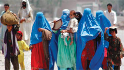

پذيرش > سایت نوشته ها > مطالبات زنان افغانستان از رئیس جمهوری آینده کشورشان
 در بیانیه ای اعلام شد در بیانیه ای اعلام شد

 مطالبات زنان افغانستان از رئیس جمهوری آینده کشورشان مطالبات زنان افغانستان از رئیس جمهوری آینده کشورشان
25 خرداد 1388 - سرمایه - نسخه قابل چاپ
سرمایه:بیانیه زنان افغانستانی برای طرح مطالباتش ان در انتخابات ریاست جمهوری این کشور که چند ماه دیگر برگزار می شود به طور کامل در زیر می آید: مطالبات زنان افغانستان از ریاست جمهوری آینده و دیگر منتخبان ما بخشی از فعالان حقوق شهروندی و حقوق زنان، به عنوان فعالان جامعه مدنی در عرصه های مختلف صنفی، مطبوعاتی، سازمان های غیردولتی، احزاب و نهادهای سیاسی و اجتماعی هستیم که طی سالیان گذشته راه های گوناگون و صعب العبوری را برای تحقق خواسته ها و مطالبات زنان و بهبود وضعیت زندگی آنان پیموده ایم و هرگاه ضرورت اقتضا می کرده، برای تحقق این خواسته ها در کنار هم گام برداشته ایم.
امروز نیز مصمم شده ایم به منظور ارائه بخشی از مطالبات خود و زنان سرزمین مان، با بهره گیری از فضای انتخاباتی ائتلاف دیگری را شکل دهیم. این ائتلاف که هدف آن طرح مطالبات زنان است، درصدد حمایت از کاندیدایی خاص یا مداخله در حق شهروندان در انتخابات نیست بلکه می خواهد صدای زنان این سرزمین را هرچه رساتر به گوش جامعه برساند. ما می خواهیم از این طریق بگوییم که زنان همواره در سخت ترین شرایط اجتماعی و اقتصادی پابه پای مردان قدم در راه های سخت فقر و مهاجرت گذاشته اند اما تا به امروز از دستیابی به حقوق انسانی خویش محروم بوده اند. ما می خواهیم در عین نظارت غیرمستقیم بر چگونگی تایید صلاحیت نامزدان ریاست جمهوری و نحوه برگزاری انتخابات شفاف که حق شهروندان است، تنها به این امر بسنده نکرده و مسوولان را متوجه مطالبات و خواسته های نیمی از شهروندان جامعه، یعنی زنان بسازیم. ما می خواهیم از این طریق نشان دهیم که اگر «نیک بنگریم» در سخت ترین شرایط اجتماعی و سیاسی هم می توان شهروندی تاثیرگذار بود و برای زندگی بهتر و عادلانه تلاش کرد ولی تحقق این امر مشروط به آن است که ما زنان بتوانیم و ثابت کنیم که از ظرفیت، هوشیاری و جسارت آزمودن راه های گوناگون مدنی برخورداریم زیرا تجربه نشان داده هر فضا و روزنه ای را که زنان بدون حضور خود رها ساخته اند، بلافاصله با حضور «زن ستیزان» فتح شده و زندگی یکایک زنان کشور را بیش از پیش دستخوش محدودیت های غیرانسانی و رفتارهای خشونت بار کرده است.
مطالبات کمپین 50 درصد
پایان بخشیدن به منازعات و مذاکرات غیرشفاف با عاملان جنگ ها و جنایات گذشته و توجه دائم و مرکزی به حقوق زنان در تمام تصمیم گیری ها و سیاستگذاری های کلان کشور جوهر و شالوده مشترک مطالبات گروه های مختلف زنان است. ما زنان با این باور که دموکراسی و عدالت با نگاه کردن به شرایط زنان سنجیده می شود، همواره با استفاده از شیوه های عاری از خشونت، برای دستیابی به دموکراسی، آزادی های فردی و مدنی یعنی عدالت و برابری و حقوق شهروندی مبارزه کرده ایم و از این رو است که امروز نیز مانند گذشته به طرح مطالبات خود برخاسته ایم و نیک می دانیم که برابری جنسیتی پیش شرط تحقق دموکراسی، توسعه پایدار و دستیابی به جامعه ای سالم، انسانی و عاری از خشونت، فقر و بی عدالتی است.
از این رو ما زنان و مردان افغانستان، با اعتقاد به اینکه بدون رفع تبعیض از زندگی زنان و بهبود کیفیت زندگی نیمی از شهروندان جامعه، هیچ جامعه ای به دموکراسی، عدالت و توسعه پایدار دست نخواهد یافت، از کاندیداهای ریاست جمهوری می خواهیم در سیاست ها و برنامه های خود به مطالبات اساسی ما که زمینه ساز تحقق مطالبات زنان در حوزه های مختلف و دستیابی به زندگی بهتر و جامعه ای سالم تر است، پاسخ دهند:
1- تلاش در جهت دستیابی به صلح پایدار و عادلانه در کشور از طریق یافتن راه حل های مسالمت آمیز و پایان بخشیدن به راه حل های جنگجویانه و مذاکرات غیرشفاف با عاملان جنگ ها و سرکوب. بیش از سه دهه جنگ باعث کشته شدن میلیون ها انسان بیگناه، زن و کودک شده است. زنان زیادی به دلیل جنگ فرزندان و همسران خود را از دست داده و می دهند. پرداختن به جنگ و بودن در شرایط جنگی باعث از بین رفتن بسیاری از فرصت های اجتماعی، اقتصادی و فرهنگی شده و این امر منجر به عقب ماندگی جامعه افغانستانی و مهاجرت میلیون ها انسان از این کشور شده است. از این رو از رئیس جمهور آینده می خواهیم به منظور دستیابی به صلح پایدار و پایان بخشیدن به منازعاتی که بیش از سه دهه به طول انجامیده، خواست دادخواهانه ما را پاسخ گفته و مسوولیت پذیری در مقابل قربانیان را پیش شرط هر نوع دستیابی به صلح و در صدر برنامه های کاری خود قرار دهد.
2- تامین امنیت اجتماعی زنان (در عرصه های کاری، ازدواج و دسترسی به سیستم قضایی عادلانه) لازمه گام برداشتن در عرصه های مختلف اجتماعی، برخورداری از امنیت اجتماعی و آزادی های فردی است که خود دربرگیرنده امنیت سیاسی، اقتصادی، اجتماعی و قضایی است. ما از رئیس جمهور آینده می خواهیم در راستای تامین امنیت اجتماعی که موجب باز شدن درهای انکشاف اجتماعی، فرهنگی و اقتصادی روی زنان می شود، تلاش عملی کند.
3- اعلام بسیج عمومی برای سوادآموزی زنان و تخصیص منابع مورد نیاز مالی و انسانی به این امر مهم. بر همگان روشن است بسیاری از مشکلاتی که جامعه فعلی افغانستان با آن دست به گریبان است به ویژه وضعیت نابسامان زنان، بر خاسته از سطح پایین سواد و آگاهی در میان مردم است که در این میان نسبت بی سوادی در میان زنان بسیار بیشتر از مردان است. ما از رئیس جمهور آینده می خواهیم در عین توجه به آموزش کودکان و کسب اطمینان از دسترسی تمام کودکان این سرزمین اعم از دختر و پسر به امکانات آموزشی و تحصیلی رایگان و با کیفیت، با استفاده از امکانات و مجموعه ظرفیت های خود، در جهت رفع معضل بی سوادی در میان زنان بزرگسال اقدامات بسیارموثری انجام دهد و با اعلان بسیج عمومی برای سوادآموزی از تمام ظرفیت های داخلی و خارجی استفاده کند.
4- تلاش در جهت رفع قوانین تبعیض آمیز علیه زنان و گنجاندن اصل برابری جنسیتی بدون قید و شرط در تمام قوانین. هرچند که تغییر در قوانین تبعیض آمیز تنها برعهده ریاست جمهوری نیست اما می دانیم که اگر هیات دولت آینده به برابری زنان کشور پایبند باشد و آن را از وظایف و تعهدات خود به مردم بداند، می تواند با امکانات و مجموعه ظرفیت های خود در جهت رفع تبعیض های قانونی علیه زنان اقدامات بسیار موثری انجام دهد و برای آنکه مردم و مجلس نیز بتوانند در جهت تغییر قوانین مدنی و جزایی تلاش کنند، ابتدا قوانین عادی باید به نفع حقوق زنان اصلاح شود و همه قوانین نابرابر و حتی رسوم، تعصب ها و سنت های ضدزن به تدریج تغییر کنند. همچنین دولت، بخش خصوصی و اشخاص حق ندارند اقدامی انجام دهند.
سرمایه
ارسال به
بالاترین
،
توییتر
،
فریندفید
،
فیسبوک
در همين بخش :
 یک خبر تلخ؟ یک قانونشکنی؟ یک تصمیم بخشنامهای جدید؟ یک خبر تلخ؟ یک قانونشکنی؟ یک تصمیم بخشنامهای جدید؟
چرا بایست به سکسوالیته پرداخت؟ / نفیسه آزاد
آزارجنسی خانگی؛ «قربانی» نه، «نجات یافته»
زنان، بزرگترین بازندگان بهار عرب
سانسور از دیدگاه جنسیتی/الهه امانی
ديگر بخش ها :
طرح یک میلیون امضا
|
مقالات
|
سایت نوشته ها
|
اخبار
|
گزارش كمپين
|
گفت و گو
|
علیه سکوت
|
كوچه به كوچه
|
نامه های شما
|
گزارش ویژه
|
گفتگو با اعضا
|
ویژه سالگرد کمپین
|
تصویر برابری
|
دل آرام علی
|
تریبون
|
مقالات
|
تاریخ شفاهی
|
خارج از چارچوب
|
کتابخانه
|
درباره کمپین
|
کمپین در شهرها
|
کمپین در بند
|
صدای تغییر
|
ویژه 22 خرداد
|
لایحه حمایت از خانواده
|
گالری
|
عشا مومنی
|
امیر یعقوبعلی
|
خدیجه مقدم
|
راحله عسگری زاده و نسیم خسروی
|
پروین اردلان،جلوه جواهری، مریم حسین خواه، ناهید کشاورز
|
زینب پیغمبرزاده
|
سعیده امین، سارا ایمانیان، محبوبه حسین زاده، ناهید کشاورز و همایون نامی
|
احترام شادفر
|
نسیم سرابندی زاده،فاطمه دهدشتی
|
وبلاگ مهمان
|
پرونده خرم آباد
|
دستگیری ها
|
مریم مالک
|
پرستو اللهیاری
|
مهرنوش اعتمادی
|
سمیه رشیدی
|
Other Languages
|
همراهان
|
«فراخوان کمپین ده روز با بهاره هدایت»
| English
|